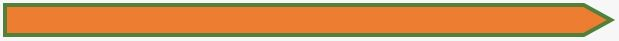
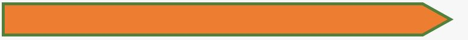
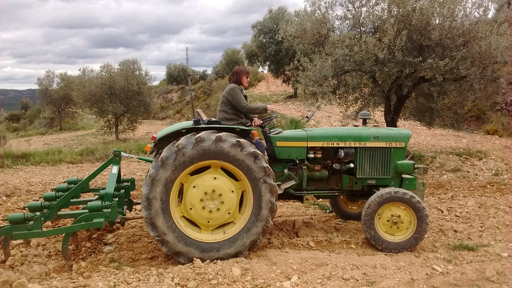
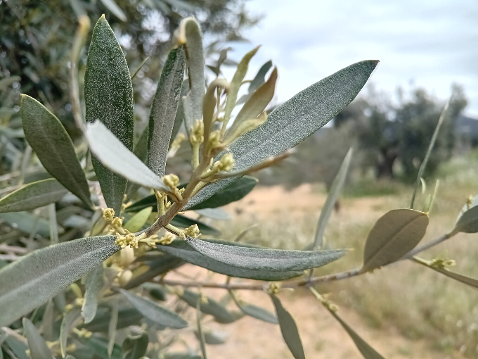
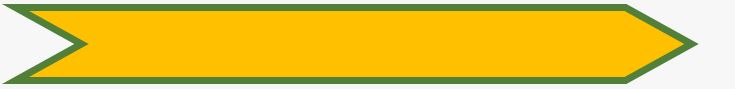
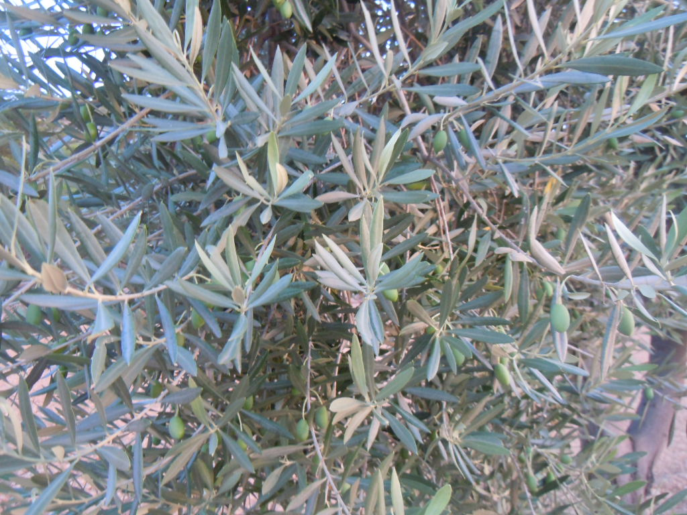
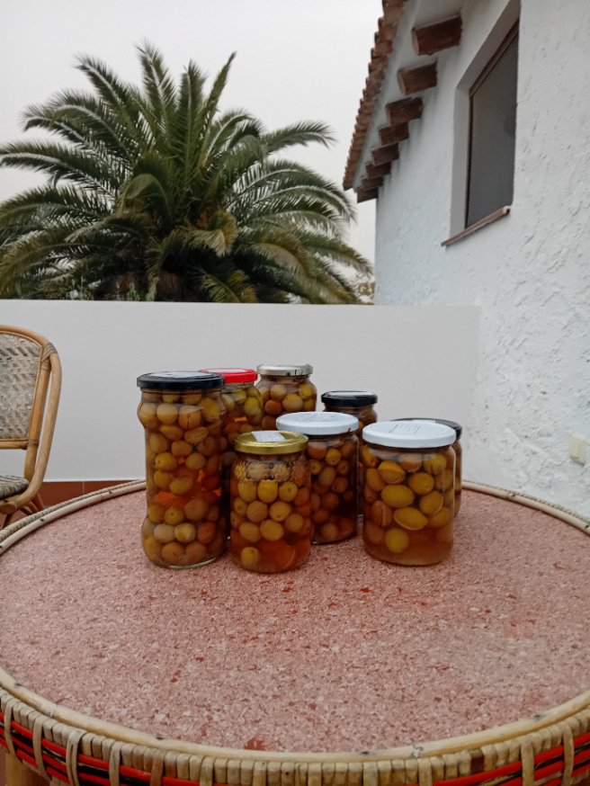
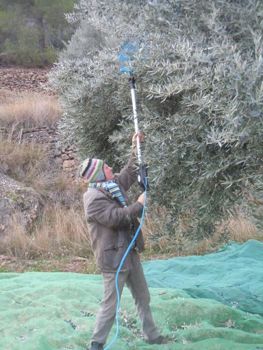
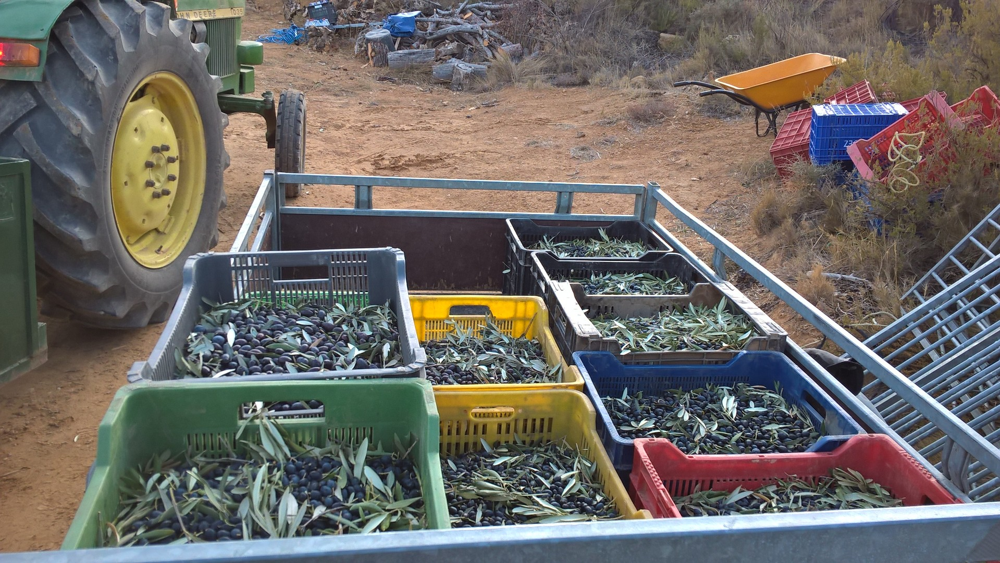
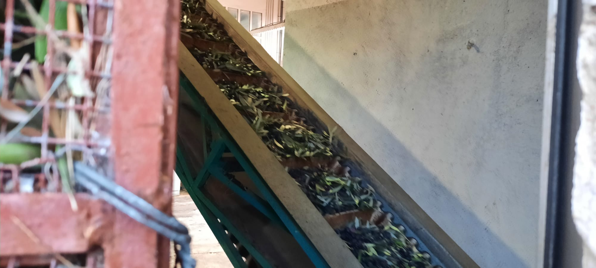

Van olijfboom tot olijfolie
In onze streek staan doorgaans 100 à 200 olijfbomen per hectare. Elke boom brengt gemiddeld 15 tot 50 kilogram olijven op. Het kan ook meer of veel minder zijn naargelang de grootte van de boom of de weersomstandigheden van het voorbije jaar. Afhankelijk van de soort heb je tussen de 4 en 7 kilogram olijven nodig voor één liter olijfolie.
De grootste uitdaging bij de teelt van olijven is de droogte, daarom telen we onze olijven op terrassen. Dankzij terrasbouw blijft het gevallen regenwater langer in de bodem aanwezig omdat het minder snel van de hellingen af vloeit. Andere vijanden van de olijf zijn de olijfvlieg en te hoge temperaturen waardoor de bloesems verschroeien.
Het jaarschema voor de productie van de olijfolie, ziet er in grote lijnen als volgt uit:


Februari en maart
Alle bomen worden gesnoeid. Goede snoei is belangrijk om de opbrengst te verhogen. Het snoeihout wordt verhakseld en rondgestrooid op het veld. Dit helpt tegen onkruid en tegelijkertijd verteert het als organische voeding in de bodem. Als we tijd over hebben doen we wat algemene onderhoudswerken zoals de grond bewerken en onkruid verwijderen.

April, mei en juni
In deze periode staan de bomen in bloei en komen de eerste vruchtjes tevoorschijn. De velden worden bemest met schapenmest. Omdat we organisch en ecologisch werken, gebruiken we geen chemische bestrijdingsmiddelen (noch herbiciden, noch pesticiden). Geregeld verwijderen we ook het onkruid tussen de bomen omdat dit anders te veel van het al schaarse water van de bomen wegtrekt. Anderzijds laten we wel een strook met onkruid aan de rand van de terrassen staan als natuurlijk bestrijdingsmiddel. Zo creëren we een biotoop voor de natuurlijke vijanden van de olijfvlieg (een hardnekkige plaag!). Het kruid ‘Olivarde’ hebben we speciaal om die reden op het veld gezaaid.


Juli, augustus en september
In deze maanden verwijderen we de overbodige scheuten die aan de onderkant van de boomstam groeien. Deze scheuten trekken onnodig water weg aan de boomwortels en verhinderen bij de oogst dat je comfortabel de doeken rond de boom kan draperen. In deze periode worden de olijven groter en dikker.

Oktober
De olijven zijn nu groen en dus onrijp. We plukken alvast handmatig een deel olijven die we opleggen in glazen potten met water en zout met de bedoeling ze later op te eten.

November en december
In november en december worden de rijpe olijven geoogst en geperst. De oogst doen we semi-manueel. We gebruiken hierbij een elektrisch harkje. De tanden van de hark doen de twijgen en kleine takjes trillen waar de olijven aanhangen, zodat ze er afvallen. De olijven vallen zo neer op grote doeken die we vooraf onder de boom open spreiden. Daarna plooien we de doeken samen en verzamelen alles in bakken. Deze manier van oogsten is zeer arbeidsintensief. Op grotere boomgaarden doet men de oogst machinaal met een tractor die aan de boomstam schudt en de olijven in een soort paraplu laat vallen.

Na het oogsten is het belangrijk de olijven zo snel mogelijk naar de pers te brengen om de kwaliteit van de olie te vrijwaren.
We gaan naar de molen (of pers) van Manuel in Albalate waar je olijfolie van je eigen olijven kan laten persen. Op andere plaatsen, zoals in de coöperatie van Castellote, brengen de boeren de olijven samen naar de pers en krijgen ze achteraf hun deel van de gemeenschappelijke olie.

De olijven gaan via de loopband op de weegschaal, worden gewassen en daarna geplet tot een pasta. Uit deze pasta wordt vervolgens de olie geperst. De molen heeft een moderne pers die de temperatuur bij het persen laag houdt en deze ook voortdurend monitort. Deze eerste koude persing zorgt voor een pure en kwaliteitsvolle olie met het label ‘extra virgen’ of ‘extra vierge’. Als laatste stap in het proces kan je ervoor kiezen om de olie nog te laten filteren. Tot slot wordt de olie gebotteld in flessen of grotere karaffen waarna het enkel nog proeven en genieten is van de versgeperste olijfolie!
